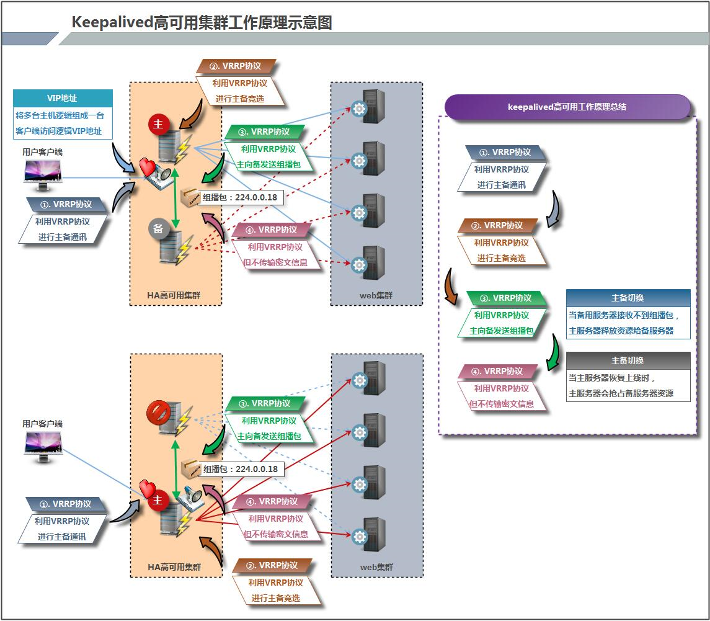

keepalived高�用
- 1. keepalived简介
- 2. keepalived�置文件讲解
- 3 脑裂
- 4. keepalived��nginx负载�衡机高�用
- 作业
1. keepalived简介
1.1 keepalived是什么？
Keepalived 软件起åˆ�是专为LVSè´Ÿè½½å�‡è¡¡è½¯ä»¶è®¾è®¡çš„，用æ�¥ç®¡ç�†å¹¶ç›‘æ�§LVS集群系统ä¸å�„个æœ�务节点的状æ€�，å��æ�¥å�ˆåŠ 入了å�¯ä»¥å®�ç�°é«˜å�¯ç”¨çš„VRRPåŠŸèƒ½ã€‚å› æ¤ï¼ŒKeepalived除了能够管ç�†LVS软件外，还å�¯ä»¥ä½œä¸ºå…¶ä»–æœ�务（例如：Nginxã€�Haproxyã€�MySQLç‰ï¼‰çš„高å�¯ç”¨è§£å†³æ–¹æ¡ˆè½¯ä»¶ã€‚
Keepalived软件主è¦�是通过VRRPå��è®®å®�ç�°é«˜å�¯ç”¨åŠŸèƒ½çš„。VRRP是Virtual Router RedundancyProtocol(虚拟路由器冗余å��议）的缩写，VRRP出ç�°çš„目的就是为了解决é�™æ€�路由å�•ç‚¹æ•…障问题的，它能够ä¿�è¯�当个别节点宕机时，整个网络å�¯ä»¥ä¸�é—´æ–地è¿�行。
所以，Keepalived 一方�具有�置管�LVS的功能，�时还具有对LVS下�节点进行�康检查的功能，�一方�也���系统网络�务的高�用功能。
keepalived官网
1.2 keepalived的��功能
keepalived 有三个��的功能，分别是：
- 管�LVS负载�衡软件
- ��LVS集群节点的�康检查
- 作为系统网络�务的高�用性（failover）
1.3 keepalived高�用故障转移的��
Keepalived 高�用�务之间的故障切�转移，是通过 VRRP (Virtual Router Redundancy Protocol ,虚拟路由器冗余�议）���的。
在 Keepalived æœ�务æ£å¸¸å·¥ä½œæ—¶ï¼Œä¸» Master 节点会ä¸�æ–地å�‘备节点å�‘é€�（多æ’çš„æ–¹å¼�）心跳消æ�¯ï¼Œç”¨ä»¥å‘Šè¯‰å¤‡ Backup 节点自己还活看，当主 Master 节点å�‘ç”Ÿæ•…éšœæ—¶ï¼Œå°±æ— æ³•å�‘é€�心跳消æ�¯ï¼Œå¤‡èŠ‚ç‚¹ä¹Ÿå°±å› æ¤æ— 法继ç»æ£€æµ‹åˆ°æ�¥è‡ªä¸» Master 节点的心跳了，äº�是调用自身的æ�¥ç®¡ç¨‹åº�，æ�¥ç®¡ä¸» Master 节点的 IP 资æº�å�Šæœ�务。而当主 Master 节点æ�¢å¤�时，备 Backup 节点å�ˆä¼šé‡Šæ”¾ä¸»èŠ‚点故障时自身æ�¥ç®¡çš„IP资æº�å�Šæœ�务，æ�¢å¤�到å�Ÿæ�¥çš„备用角色。
那么，什么是VRRP呢？
VRRP ,å…¨ 称 Virtual Router Redundancy Protocol ,ä¸æ–‡å��为虚拟路由冗余å��è®® ，VRRP的出ç�°å°±æ˜¯ä¸ºäº†è§£å†³é�™æ€�踣甶的å�•ç‚¹æ•…障问题，VRRP是通过一ç§�ç«�选机制æ�¥å°†è·¯ç”±çš„任务交给æŸ�å�°VRRP路由器的。
1.4 keepalived��
1.4.1 keepalived高�用��图

1.4.2 keepalived工作���述
Keepalived高å�¯ç”¨å¯¹ä¹‹é—´æ˜¯é€šè¿‡VRRPé€šä¿¡çš„ï¼Œå› æ¤ï¼Œæˆ‘们ä»� VRRP开始了解起：
1) VRRP,全称 Virtual Router Redundancy Protocol,ä¸æ–‡å��为虚拟路由冗余å��议，VRRP的出ç�°æ˜¯ä¸ºäº†è§£å†³é�™æ€�路由的å�•ç‚¹æ•…障。
2) VRRP是通过一�竟选�议机制�将路由任务交给�� VRRP路由器的。
3) VRRP用 IP多æ’çš„æ–¹å¼�（默认多æ’地å�€ï¼ˆ224.0_0.18))å®�ç�°é«˜å�¯ç”¨å¯¹ä¹‹é—´é€šä¿¡ã€‚
4) 工作时主节点å�‘包，备节点æ�¥åŒ…，当备节点æ�¥æ”¶ä¸�到主节点å�‘çš„æ•°æ�®åŒ…的时候，就å�¯åŠ¨æ�¥ç®¡ç¨‹åº�æ�¥ç®¡ä¸»èŠ‚点的开æº�。备节点å�¯ä»¥æœ‰å¤šä¸ªï¼Œé€šè¿‡ä¼˜å…ˆçº§ç«�选，但一般 Keepalived系统è¿�维工作ä¸éƒ½æ˜¯ä¸€å¯¹ã€‚
5) VRRPä½¿ç”¨äº†åŠ å¯†å��è®®åŠ å¯†æ•°æ�®ï¼Œä½†Keepalived官方目å‰�还是æ�¨è��用æ˜�文的方å¼�é…�置认è¯�ç±»å�‹å’Œå¯†ç �。
介�完 VRRP,�下�我�介�一下 Keepalived�务的工作��：
Keepalived高å�¯ç”¨æ˜¯é€šè¿‡ VRRP 进行通信的， VRRP是通过ç«�选机制æ�¥ç¡®å®šä¸»å¤‡çš„，主的优先级高äº�å¤‡ï¼Œå› æ¤ï¼Œå·¥ä½œæ—¶ä¸»ä¼šä¼˜å…ˆè�·å¾—所有的资æº�，备节点处äº�ç‰å¾…状æ€�，当主挂了的时候，备节点就会æ�¥ç®¡ä¸»èŠ‚点的资æº�，然å��顶替主节点对外æ��ä¾›æœ�务。
在 Keepalived æœ�务之间，å�ªæœ‰ä½œä¸ºä¸»çš„æœ�务器会一直å�‘é€� VRRP 广æ’包,告诉备它还活ç�€ï¼Œæ¤æ—¶å¤‡ä¸�会æ�ªå� 主，当主ä¸�å�¯ç”¨æ—¶ï¼Œå�³å¤‡ç›‘å�¬ä¸�到主å�‘é€�的广æ’包时，就会å�¯åŠ¨ç›¸å…³æœ�务æ�¥ç®¡èµ„æº�，ä¿�è¯�业务的è¿�ç»æ€§.æ�¥ç®¡é€Ÿåº¦æœ€å¿«å�¯ä»¥å°�äº�1秒。
2. keepalived�置文件讲解
2.1 keepalived默认�置文件
keepalived 的主�置文件是 /etc/keepalived/keepalived.conf。其内容如下：
[root@master ~]# cat /etc/keepalived/keepalived.conf
! Configuration File for keepalived
global_defs { //全局�置
notification_email { //定义报è¦æ”¶ä»¶äººé‚®ä»¶åœ°å�€
acassen@firewall.loc
failover@firewall.loc
sysadmin@firewall.loc
}
notification_email_from Alexandre.Cassen@firewall.loc //定义报è¦å�‘件人邮箱
smtp_server 192.168.200.1 //邮箱�务器地�
smtp_connect_timeout 30 //定义邮箱超时时间
router_id LVS_DEVEL //å®šä¹‰è·¯ç”±æ ‡è¯†ä¿¡æ�¯ï¼Œå�Œå±€åŸŸç½‘内唯一
vrrp_skip_check_adv_addr
vrrp_strict
vrrp_garp_interval 0
vrrp_gna_interval 0
}
vrrp_instance VI_1 { //定义�例
state MASTER //指定keepalived节点的�始状�，�选值为MASTER|BACKUP
interface eth0 //VRRP�例绑定的网���，用户��VRRP包
virtual_router_id 51 //虚拟路由的ID，�一集群�一致
priority 100 //定义优先级，按优先级�决定主备角色，优先级越大越优先
nopreempt //设置ä¸�抢å�
advert_int 1 //主备通讯时间间隔
authentication { //�置认�
auth_type PASS //认è¯�æ–¹å¼�，æ¤å¤„为密ç �
auth_pass 1111 //å�Œä¸€é›†ç¾¤ä¸çš„keepalivedé…�置里的æ¤å¤„必须一致，æ�¨è��使用8ä½�éš�机数
}
virtual_ipaddress { //�置�使用的VIP地�
192.168.200.16
}
}
virtual_server 192.168.200.16 1358 { //�置虚拟�务器
delay_loop 6 //�康检查的时间间隔
lb_algo rr //lvs调度算法
lb_kind NAT //lvs模�
persistence_timeout 50 //�久化超时时间，��是秒
protocol TCP //4层�议
sorry_server 192.168.200.200 1358 //定义备用�务器，当所有RS都故障时用sorry_server��应客户端
real_server 192.168.200.2 1358 { //定义真�处�请求的�务器
weight 1 //给�务器指定��，默认为1
HTTP_GET {
url {
path /testurl/test.jsp //指定�检查的URL路径
digest 640205b7b0fc66c1ea91c463fac6334d //摘�信�
}
url {
path /testurl2/test.jsp
digest 640205b7b0fc66c1ea91c463fac6334d
}
url {
path /testurl3/test.jsp
digest 640205b7b0fc66c1ea91c463fac6334d
}
connect_timeout 3 //��超时时间
nb_get_retry 3 //get�试次数
delay_before_retry 3 //在�试之�延迟多长时间
}
}
real_server 192.168.200.3 1358 {
weight 1
HTTP_GET {
url {
path /testurl/test.jsp
digest 640205b7b0fc66c1ea91c463fac6334c
}
url {
path /testurl2/test.jsp
digest 640205b7b0fc66c1ea91c463fac6334c
}
connect_timeout 3
nb_get_retry 3
delay_before_retry 3
}
}
}
2.2 定制主�置文件
vrrp_instance段�置
nopreempt //设置为ä¸�抢å� 。默认是抢å� 的，当高优先级的机器æ�¢å¤�å��，会抢å� ä½�优先 \
级的机器æˆ�为MASTER，而ä¸�抢å� ，则å…�许ä½�优先级的机器继ç»æˆ�为MASTER，å�³ä½¿é«˜ä¼˜å…ˆçº§ \
的机器已�上线。如��使用这个功能，则�始化状�必须为BACKUP。
preempt_delay //设置抢å� 延迟。å�•ä½�是秒，范围是0---1000，默认是0.å�‘ç�°ä½�优先 \
级的MASTERå��多少秒开始抢å� 。
vrrp_script段�置
//ä½œç”¨ï¼šæ·»åŠ ä¸€ä¸ªå‘¨æœŸæ€§æ‰§è¡Œçš„è„šæœ¬ã€‚è„šæœ¬çš„é€€å‡ºçŠ¶æ€�ç �会被调用它的所有的VRRP Instance记录。
//注�：至少有一个VRRP�例调用它并且优先级�能为0.优先级范围是1-254.
vrrp_script <SCRIPT_NAME> {
...
}
//选项说�：
script "/path/to/somewhere" //指定�执行的脚本的路径。
interval <INTEGER> //指定脚本执行的间隔。��是秒。默认为1s。
timeout <INTEGER> //指定在多少秒�，脚本被认为执行失败。
weight <-254 --- 254> //调整优先级。默认为2.
rise <INTEGER> //执行�功多少次�认为是�功。
fall <INTEGER> //执行失败多少次�认为失败。
user <USERNAME> [GROUPNAME] //�行脚本的用户和组。
init_fail //�设脚本�始状�是失败状�。
//weight说�：
1. 如æ�œè„šæœ¬æ‰§è¡Œæˆ�功(退出状æ€�ç �为0)，weight大äº�0，则priorityå¢�åŠ ã€‚
2. 如æ�œè„šæœ¬æ‰§è¡Œå¤±è´¥(退出状æ€�ç �为é��0)，weightå°�äº�0，则priorityå‡�少。
3. 其他情况下，priority��。
real_server段�置
weight <INT> //给�务器指定��。默认是1
inhibit_on_failure //当�务器�康检查失败时，将其weight设置为0， \
//而ä¸�是ä»�Virtual Serverä¸ç§»é™¤
notify_up <STRING> //当�务器�康检查�功时，执行的脚本
notify_down <STRING> //当�务器�康检查失败时，执行的脚本
uthreshold <INT> //到这��务器的最大��数
lthreshold <INT> //到这��务器的最���数
tcp_check段�置
connect_ip <IP ADDRESS> //��的IP地�。默认是real server的ip地�
connect_port <PORT> //��的端�。默认是real server的端�
bindto <IP ADDRESS> //�起��的��的地�。
bind_port <PORT> //�起��的�端�。
connect_timeout <INT> //��超时时间。默认是5s。
fwmark <INTEGER> //使用fwmark对所有出å�»çš„检查数æ�®åŒ…è¿›è¡Œæ ‡è®°ã€‚
warmup <INT> //指定一个éš�机延迟，最大为N秒。å�¯é˜²æ¢ç½‘络阻å¡�。如æ�œä¸º0，则关é—该功能。
retry <INIT> //�试次数。默认是1次。
delay_before_retry <INT> //默认是1秒。在�试之�延迟多少秒。
2.3 �例
global_defs {
router_id LVS_Server
}
vrrp_instance VI_1 {
state BACKUP
interface ens33
virtual_router_id 51
priority 150
nopreempt
advert_int 1
authentication {
auth_type PASS
auth_pass wangqing
}
virtual_ipaddress {
172.16.12.250 dev ens33
}
}
virtual_server 172.16.12.250 80 {
delay_loop 3
lvs_sched rr
lvs_method DR
protocol TCP
real_server 172.16.12.129 80 {
weight 1
TCP_CHECK {
connect_port 80
connect_timeout 3
nb_get_retry 3
delay_before_retry 3
}
}
real_server 172.16.12.130 8080 {
weight 1
TCP_CHECK {
connect_port 8080
connect_timeout 3
nb_get_retry 3
delay_before_retry 3
}
}
}
3 脑裂
在高å�¯ç”¨ï¼ˆHA）系统ä¸ï¼Œå½“è�”ç³»2个节点的“心跳线â€�æ–开时，本æ�¥ä¸ºä¸€æ•´ä½“ã€�动作å��调的HA系统，就分裂æˆ�为2个独立的个体。由äº�相互失å�»äº†è�”系，都以为是对方出了故障。两个节点上的HA软件åƒ�“裂脑人â€�ä¸€æ ·ï¼Œäº‰æŠ¢â€œå…±äº«èµ„æº�â€�ã€�争起“应用æœ�务â€�，就会å�‘生严é‡�å��æ�œâ€”—或者共享资æº�被瓜分ã€�2边“æœ�务â€�都起ä¸�æ�¥äº†ï¼›æˆ–者2边“æœ�务â€�都起æ�¥äº†ï¼Œä½†å�Œæ—¶è¯»å†™â€œå…±äº«å˜å‚¨â€�，导致数æ�®æ�Ÿå��（常è§�如数æ�®åº“轮询ç�€çš„è�”机日志出错）。
　　
对付HA系统“裂脑â€�的对ç–，目å‰�è¾¾æˆ�å…±è¯†çš„çš„å¤§æ¦‚æœ‰ä»¥ä¸‹å‡ æ�¡ï¼š
- æ·»åŠ å†—ä½™çš„å¿ƒè·³çº¿ï¼Œä¾‹å¦‚ï¼šå�Œçº¿æ�¡çº¿ï¼ˆå¿ƒè·³çº¿ä¹ŸHA），尽é‡�å‡�少“裂脑â€�å�‘ç”Ÿå‡ ç�‡ï¼›
- å�¯ç”¨ç£�盘é”�。æ£åœ¨æœ�务一方é”�ä½�共享ç£�盘，“裂脑â€�å�‘生时，让对方完全“抢ä¸�èµ°â€�共享ç£�盘资æº�。但使用é”�ç£�盘也会有一个ä¸�å°�的问题，如æ�œå� 用共享盘的一方ä¸�主动“解é”�â€�，å�¦ä¸€æ–¹å°±æ°¸è¿œå¾—ä¸�到共享ç£�盘。ç�°å®�ä¸å�‡å¦‚æœ�务节点çª�然æ»æœºæˆ–崩溃，就ä¸�å�¯èƒ½æ‰§è¡Œè§£é”�命令。å��备节点也就æ�¥ç®¡ä¸�了共享资æº�和应用æœ�务。äº�是有人在HAä¸è®¾è®¡äº†â€œæ™ºèƒ½â€�é”�。å�³ï¼šæ£åœ¨æœ�务的一方å�ªåœ¨å�‘ç�°å¿ƒè·³çº¿å…¨éƒ¨æ–开（察觉ä¸�到对端）时æ‰�å�¯ç”¨ç£�盘é”�。平时就ä¸�上é”�了。
- 设置仲è£�机制。例如设置å�‚考IP（如网关IP），当心跳线完全æ–开时，2个节点都å�„自ping一下å�‚考IP，ä¸�通则表æ˜�æ–点就出在本端。ä¸�仅“心跳â€�ã€�还兼对外“æœ�务â€�的本端网络链路æ–了，å�³ä½¿å�¯åŠ¨ï¼ˆæˆ–继ç»ï¼‰åº”用æœ�务也没有用了，那就主动放弃ç«�争，让能够ping通å�‚考IP的一端å�»èµ·æœ�务。更ä¿�险一些，pingä¸�通å�‚考IP的一方干脆就自我é‡�å�¯ï¼Œä»¥å½»åº•é‡Šæ”¾æœ‰å�¯èƒ½è¿˜å� 用ç�€çš„那些共享资æº�
3.1 脑裂产生的å�Ÿå›
一般æ�¥è¯´ï¼Œè„‘裂的å�‘ç”Ÿï¼Œæœ‰ä»¥ä¸‹å‡ ç§�å�Ÿå› ：
- 高å�¯ç”¨æœ�务器对之间心跳线链路å�‘ç”Ÿæ•…éšœï¼Œå¯¼è‡´æ— æ³•æ£å¸¸é€šä¿¡
- å› å¿ƒè·³çº¿å��了（包括æ–了，è€�化）
- å› ç½‘å�¡å�Šç›¸å…³é©±åŠ¨å��了，ipé…�ç½®å�Šå†²çª�问题（网å�¡ç›´è¿�）
- å› å¿ƒè·³çº¿é—´è¿�æ�¥çš„设备故障（网å�¡å�Šäº¤æ�¢æœºï¼‰
- å› ä»²è£�的机器出问题（采用仲è£�的方案）
- 高å�¯ç”¨æœ�务器上开å�¯äº† iptables防ç�«å¢™é˜»æŒ¡äº†å¿ƒè·³æ¶ˆæ�¯ä¼ 输
- 高å�¯ç”¨æœ�务器上心跳网å�¡åœ°å�€ç‰ä¿¡æ�¯é…�ç½®ä¸�æ£ç¡®ï¼Œå¯¼è‡´å�‘é€�心跳失败
- 其他æœ�务é…�ç½®ä¸�当ç‰å�Ÿå› ，如心跳方å¼�ä¸�å�Œï¼Œå¿ƒè·³å¹¿æ�’冲çª�ã€�软件Bugç‰
注�：
Keepalived�置里�一 VRRP�例如� virtual_router_id两端�数�置�一致也会导致裂脑问题�生。
3.2 脑裂的常�解决方案
在å®�际生产ç�¯å¢ƒä¸ï¼Œæˆ‘们å�¯ä»¥ä»�ä»¥ä¸‹å‡ ä¸ªæ–¹é�¢æ�¥é˜²æ¢è£‚脑问题的å�‘生：
- å�Œæ—¶ä½¿ç”¨ä¸²è¡Œç”µç¼†å’Œä»¥å¤ªç½‘电缆è¿�æ�¥ï¼Œå�Œæ—¶ç”¨ä¸¤æ�¡å¿ƒè·³çº¿è·¯ï¼Œè¿™æ ·ä¸€æ�¡çº¿è·¯å��了，å�¦ä¸€ä¸ªè¿˜æ˜¯å¥½çš„，ä¾�ç„¶èƒ½ä¼ é€�心跳消æ�¯
- 当检测到裂脑时强行关é—一个心跳节点（这个功能需特殊设备支æŒ�，如Stonithã€�feyce）。相当äº�备节点æ�¥æ”¶ä¸�到心跳消患，通过å�•ç‹¬çš„线路å�‘é€�关机命令关é—主节点的电æº�
- å�šå¥½å¯¹è£‚脑的监æ�§æŠ¥è¦ï¼ˆå¦‚邮件å�Šæ‰‹æœºçŸä¿¡ç‰æˆ–值ç�）.在问题å�‘生时人为第一时间介入仲è£�，é™�ä½�æ�Ÿå¤±ã€‚例如，百度的监æ�§æŠ¥è¦çŸä¿¡å°±æœ‰ä¸Šè¡Œå’Œä¸‹è¡Œçš„区别。报è¦æ¶ˆæ�¯å�‘é€�到管ç�†å‘˜æ‰‹æœºä¸Šï¼Œç®¡ç�†å‘˜å�¯ä»¥é€šè¿‡æ‰‹æœºå›�å¤�对应数å—或简å�•çš„å—符串æ“�作返å›�ç»™æœ�务器.让æœ�åŠ¡å™¨æ ¹æ�®æŒ‡ä»¤è‡ªåŠ¨å¤„ç�†ç›¸åº”æ•…éšœï¼Œè¿™æ ·è§£å†³æ•…éšœçš„æ—¶é—´æ›´çŸ.
　　
当然，在å®�施高å�¯ç”¨æ–¹æ¡ˆæ—¶ï¼Œè¦�æ ¹æ�®ä¸šåŠ¡å®�际需求确定是å�¦èƒ½å®¹å¿�è¿™æ ·çš„æ�Ÿå¤±ã€‚对äº�一般的网站常规业务.这个æ�Ÿå¤±æ˜¯å�¯å®¹å¿�çš„
3.3 对脑裂进行监�
对脑裂的监æ�§åº”在备用æœ�åŠ¡å™¨ä¸Šè¿›è¡Œï¼Œé€šè¿‡æ·»åŠ zabbix自定义监æ�§è¿›è¡Œã€‚
监æ�§ä»€ä¹ˆä¿¡æ�¯å‘¢ï¼Ÿç›‘æ�§å¤‡ä¸Šæœ‰æ— VIP地å�€
备机上出�VIP有两�情况：
- �生了脑裂
- æ£å¸¸çš„主备切æ�¢
监æ�§å�ªæ˜¯ç›‘æ�§å�‘生脑裂的å�¯èƒ½æ€§ï¼Œä¸�能ä¿�è¯�一定是å�‘ç”Ÿäº†è„‘è£‚ï¼Œå› ä¸ºæ£å¸¸çš„主备切æ�¢VIP也是会到备上的。
监�脚本如下：
[root@slave ~]# mkdir -p /scripts && cd /scripts
[root@slave scripts]# vim check_keepalived.sh
#!/bin/bash
if [ `ip a show ens33 |grep 172.16.12.250|wc -l` -ne 0 ]
then
echo "keepalived is error!"
else
echo "keepalived is OK !"
fi
编写脚本时è¦�注æ„�，网å�¡è¦�改æˆ�ä½ è‡ªå·±çš„ç½‘å�¡å��称，VIP也è¦�改æˆ�ä½ è‡ªå·±çš„VIP，最å��ä¸�è¦�忘了给脚本赋予执行æ�ƒé™�，且è¦�修改/scripts目录的å±�主å±�组为zabbix
4. keepalived��nginx负载�衡机高�用
�境说�
| 系统信� | 主机� | IP |
|---|---|---|
| rhel7.4 | master | 172.16.12.129 |
| rhel7.4 | slave | 172.16.12.130 |
本次高�用虚拟IP（VIP）地�暂定为 172.16.12.250
4.1 keepalived安装
�置主keepalived
//å…³é—防ç�«å¢™ä¸�SELINUX
[root@master ~]# systemctl stop firewalld
[root@master ~]# systemctl disable firewalld
Removed symlink /etc/systemd/system/multi-user.target.wants/firewalld.service.
Removed symlink /etc/systemd/system/dbus-org.fedoraproject.FirewallD1.service.
[root@master ~]# setenforce 0
[root@master ~]# sed -ri 's/^(SELINUX=).*/\1disabled/g' /etc/selinux/config
//�置网络�
[root@master ~]# curl -o /etc/yum.repos.d/CentOS7-Base-163.repo http://mirrors.163.com/.help/CentOS7-Base-163.repo
[root@master ~]# sed -i 's/\$releasever/7/g' /etc/yum.repos.d/CentOS7-Base-163.repo
[root@master ~]# sed -i 's/^enabled=.*/enabled=1/g' /etc/yum.repos.d/CentOS7-Base-163.repo
[root@master ~]# yum -y install epel-release vim wget gcc gcc-c++
安装过程略.....
//安装keepalived
[root@master ~]# yum -y install keepalived
//查看安装生�的文件
[root@master ~]# rpm -ql keepalived
/etc/keepalived //�置目录
/etc/keepalived/keepalived.conf //æ¤ä¸ºä¸»é…�置文件
/etc/sysconfig/keepalived
/usr/bin/genhash
/usr/lib/systemd/system/keepalived.service //æ¤ä¸ºæœ�务æ�§åˆ¶æ–‡ä»¶
/usr/libexec/keepalived
/usr/sbin/keepalived
.....æ¤å¤„çœ�ç•¥Nè¡Œ
用å�Œæ ·çš„方法在备æœ�务器上安装keepalived
//å…³é—防ç�«å¢™ä¸�SELINUX
[root@slave ~]# systemctl stop firewalld
[root@slave ~]# systemctl disable firewalld
Removed symlink /etc/systemd/system/multi-user.target.wants/firewalld.service.
Removed symlink /etc/systemd/system/dbus-org.fedoraproject.FirewallD1.service.
[root@slave ~]# setenforce 0
[root@slave ~]# sed -ri 's/^(SELINUX=).*/\1disabled/g' /etc/selinux/config
//�置网络�
[root@slave ~]# curl -o /etc/yum.repos.d/CentOS7-Base-163.repo http://mirrors.163.com/.help/CentOS7-Base-163.repo
[root@slave ~]# sed -i 's/\$releasever/7/g' /etc/yum.repos.d/CentOS7-Base-163.repo
[root@slave ~]# sed -i 's/^enabled=.*/enabled=1/g' /etc/yum.repos.d/CentOS7-Base-163.repo
[root@slave ~]# yum -y install epel-release vim wget gcc gcc-c++
安装过程略.....
//安装keepalived
[root@slave ~]# yum -y install keepalived
4.2 在主备机上分别安装nginx
在master上安装nginx
[root@master ~]# yum -y install nginx
[root@master ~]# cd /usr/share/nginx/html/
[root@master html]# ls
404.html 50x.html index.html nginx-logo.png poweredby.png
[root@master html]# mv index.html{,.bak}
[root@master html]# echo 'master' > index.html
[root@master html]# ls
404.html 50x.html index.html index.html.bak nginx-logo.png poweredby.png
[root@master html]# systemctl start nginx
[root@master html]# systemctl enable nginx
[root@master html]# ss -antl
State Recv-Q Send-Q Local Address:Port Peer Address:Port
LISTEN 0 128 *:80 *:*
LISTEN 0 128 *:22 *:*
LISTEN 0 100 127.0.0.1:25 *:*
LISTEN 0 128 :::80 :::*
LISTEN 0 128 :::22 :::*
LISTEN 0 100 ::1:25 :::*
在slave上安装nginx
[root@slave ~]# yum -y install nginx
[root@slave ~]# cd /usr/share/nginx/html/
[root@slave html]# ls
404.html 50x.html index.html nginx-logo.png poweredby.png
[root@slave html]# mv index.html{,.bak}
[root@slave html]# echo 'slave' > index.html
[root@slave html]# ls
404.html 50x.html index.html index.html.bak nginx-logo.png poweredby.png
[root@slave html]# systemctl start nginx
[root@slave html]# systemctl enable nginx
在æµ�览器上访问试试，确ä¿�master上的nginxæœ�务能够æ£å¸¸è®¿é—®
4.3 keepalived�置
4.3.1 �置主keepalived
[root@master ~]# vim /etc/keepalived/keepalived.conf
! Configuration File for keepalived
global_defs {
router_id lb01
}
vrrp_instance VI_1 {
state MASTER
interface ens33
virtual_router_id 51
priority 100
advert_int 1
authentication {
auth_type PASS
auth_pass wangqing
}
virtual_ipaddress {
172.16.12.250
}
}
virtual_server 172.16.12.250 80 {
delay_loop 6
lb_algo rr
lb_kind DR
persistence_timeout 50
protocol TCP
real_server 172.16.12.129 80 {
weight 1
TCP_CHECK {
connect_port 80
connect_timeout 3
nb_get_retry 3
delay_before_retry 3
}
}
real_server 172.16.12.130 80 {
weight 1
TCP_CHECK {
connect_port 80
connect_timeout 3
nb_get_retry 3
delay_before_retry 3
}
}
}
[root@master ~]# systemctl start keepalived
[root@master ~]# systemctl enable keepalived
4.3.2 �置备keepalived
[root@slave ~]# vim /etc/keepalived/keepalived.conf
! Configuration File for keepalived
global_defs {
router_id lb02
}
vrrp_instance VI_1 {
state BACKUP
interface eth0
virtual_router_id 51
priority 90
advert_int 1
authentication {
auth_type PASS
auth_pass wangqing
}
virtual_ipaddress {
172.16.12.250
}
}
virtual_server 172.16.12.250 80 {
delay_loop 6
lb_algo rr
lb_kind DR
persistence_timeout 50
protocol TCP
real_server 172.16.12.129 80 {
weight 1
TCP_CHECK {
connect_port 80
connect_timeout 3
nb_get_retry 3
delay_before_retry 3
}
}
real_server 172.16.12.130 80 {
weight 1
TCP_CHECK {
connect_port 80
connect_timeout 3
nb_get_retry 3
delay_before_retry 3
}
}
}
[root@slave ~]# systemctl start keepalived
[root@slave ~]# systemctl enable keepalived
4.3.3 查看VIP在哪里
在MASTER上查看
[root@master ~]# ip a
1: lo: <LOOPBACK,UP,LOWER_UP> mtu 65536 qdisc noqueue state UNKNOWN qlen 1
link/loopback 00:00:00:00:00:00 brd 00:00:00:00:00:00
inet 127.0.0.1/8 scope host lo
valid_lft forever preferred_lft forever
inet6 ::1/128 scope host
valid_lft forever preferred_lft forever
2: ens33: <BROADCAST,MULTICAST,UP,LOWER_UP> mtu 1500 qdisc pfifo_fast state UP qlen 1000
link/ether 00:0c:29:c0:ed:3b brd ff:ff:ff:ff:ff:ff
inet 172.16.12.129/24 brd 172.16.12.255 scope global ens33
valid_lft forever preferred_lft forever
inet 172.16.12.250/32 scope global ens33 //å�¯ä»¥çœ‹åˆ°æ¤å¤„有VIP
valid_lft forever preferred_lft forever
inet6 fe80::20c:29ff:fec0:ed3b/64 scope link
valid_lft forever preferred_lft forever
在SLAVE上查看
[root@slave ~]# ip a
1: lo: <LOOPBACK,UP,LOWER_UP> mtu 65536 qdisc noqueue state UNKNOWN qlen 1
link/loopback 00:00:00:00:00:00 brd 00:00:00:00:00:00
inet 127.0.0.1/8 scope host lo
valid_lft forever preferred_lft forever
inet6 ::1/128 scope host
valid_lft forever preferred_lft forever
2: eth0: <BROADCAST,MULTICAST,UP,LOWER_UP> mtu 1500 qdisc pfifo_fast state UP qlen 1000
link/ether 00:0c:29:b5:38:80 brd ff:ff:ff:ff:ff:ff
inet 172.16.12.130/24 brd 172.16.12.255 scope global dynamic eth0
valid_lft 1303sec preferred_lft 1303sec
inet6 fe80::20c:29ff:feb5:3880/64 scope link
valid_lft forever preferred_lft forever
4.4 ä¿®æ”¹å†…æ ¸å�‚数，开å�¯ç›‘å�¬VIP功能
æ¤æ¥å�¯å�šå�¯ä¸�å�šï¼Œè¯¥åŠŸèƒ½å�¯ç”¨äº�仅监å�¬VIP的时候
在masterä¸Šä¿®æ”¹å†…æ ¸å�‚æ•°
[root@master ~]# echo 'net.ipv4.ip_nonlocal_bind = 1' >>/etc/sysctl.conf
[root@master ~]# sysctl -p
net.ipv4.ip_nonlocal_bind = 1
[root@master ~]# cat /proc/sys/net/ipv4/ip_nonlocal_bind
1
在slaveä¸Šä¿®æ”¹å†…æ ¸å�‚æ•°
[root@slave ~]# echo 'net.ipv4.ip_nonlocal_bind = 1' >>/etc/sysctl.conf
[root@slave ~]# sysctl -p
net.ipv4.ip_nonlocal_bind = 1
[root@slave ~]# cat /proc/sys/net/ipv4/ip_nonlocal_bind
1
4.5 让keepalived监�nginx负载�衡机
keepalived通过脚本�监�nginx负载�衡机的状�
在master上编写脚本
[root@master ~]# mkdir /scripts
[root@master ~]# cd /scripts/
[root@master scripts]# vim check_n.sh
#!/bin/bash
nginx_status=$(ps -ef|grep -Ev "grep|$0"|grep '\bnginx\b'|wc -l)
if [ $nginx_status -lt 1 ];then
systemctl stop keepalived
fi
[root@master scripts]# chmod +x check_n.sh
[root@master scripts]# ll
total 4
-rwxr-xr-x 1 root root 168 Oct 19 23:38 check_n.sh
[root@master scripts]# vim notify.sh
#!/bin/bash
VIP=$2
sendmail (){
subject="${VIP}'s server keepalived state is translate"
content="`date +'%F %T'`: `hostname`'s state change to master"
echo $content | mail -s "$subject" 1470044516@qq.com
}
case "$1" in
master)
nginx_status=$(ps -ef|grep -Ev "grep|$0"|grep '\bnginx\b'|wc -l)
if [ $nginx_status -lt 1 ];then
systemctl start nginx
fi
sendmail
;;
backup)
nginx_status=$(ps -ef|grep -Ev "grep|$0"|grep '\bnginx\b'|wc -l)
if [ $nginx_status -gt 0 ];then
systemctl stop nginx
fi
;;
*)
echo "Usage:$0 master|backup VIP"
;;
esac
[root@master scripts]# chmod +x notify.sh
[root@master scripts]# ll
total 8
-rwxr-xr-x 1 root root 168 Oct 19 23:38 check_n.sh
-rwxr-xr-x 1 root root 594 Oct 20 03:24 notify.sh
在slave上编写脚本
[root@slave ~]# mkdir /scripts
[root@slave ~]# cd /scripts/
[root@slave scripts]# vim notify.sh
#!/bin/bash
VIP=$2
sendmail (){
subject="${VIP}'s server keepalived state is translate"
content="`date +'%F %T'`: `hostname`'s state change to master"
echo $content | mail -s "$subject" 1470044516@qq.com
}
case "$1" in
master)
nginx_status=$(ps -ef|grep -Ev "grep|$0"|grep '\bnginx\b'|wc -l)
if [ $nginx_status -lt 1 ];then
systemctl start nginx
fi
sendmail
;;
backup)
nginx_status=$(ps -ef|grep -Ev "grep|$0"|grep '\bnginx\b'|wc -l)
if [ $nginx_status -gt 0 ];then
systemctl stop nginx
fi
;;
*)
echo "Usage:$0 master|backup VIP"
;;
esac
[root@slave scripts]# chmod +x notify.sh
[root@slave scripts]# ll
total 8
-rwxr-xr-x 1 root root 168 Oct 19 23:38 check_n.sh
-rwxr-xr-x 1 root root 594 Oct 20 03:24 notify.sh
æ¤å¤„的脚本å��称应é�¿å…�ä¸�æœ�务å��相å�Œï¼Œæ�¨è��用æœ�务å��的首å—æ¯�代替，如check_n，ä¸�è¦�给脚本起å��check_nginx
4.6 é…�ç½®keepalivedåŠ å…¥ç›‘æ�§è„šæœ¬çš„é…�ç½®
�置主keepalived
[root@master ~]# vim /etc/keepalived/keepalived.conf
! Configuration File for keepalived
global_defs {
router_id lb01
}
vrrp_script nginx_check {
script "/scripts/check_n.sh"
interval 1
weight -20
}
vrrp_instance VI_1 {
state MASTER
interface ens33
virtual_router_id 51
priority 100
advert_int 1
authentication {
auth_type PASS
auth_pass wangqing
}
virtual_ipaddress {
172.16.12.250
}
track_script {
nginx_check
}
notify_master "/scripts/notify.sh master 172.16.12.250"
notify_backup "/scripts/notify.sh backup 172.16.12.250"
}
virtual_server 172.16.12.250 80 {
delay_loop 6
lb_algo rr
lb_kind DR
persistence_timeout 50
protocol TCP
real_server 172.16.12.129 80 {
weight 1
TCP_CHECK {
connect_port 80
connect_timeout 3
nb_get_retry 3
delay_before_retry 3
}
}
real_server 172.16.12.130 80 {
weight 1
TCP_CHECK {
connect_port 80
connect_timeout 3
nb_get_retry 3
delay_before_retry 3
}
}
}
[root@master ~]# systemctl restart keepalived
�置备keepalived
backupæ— éœ€æ£€æµ‹nginx是å�¦æ£å¸¸ï¼Œå½“å�‡çº§ä¸ºMASTERæ—¶å�¯åŠ¨nginx，当é™�级为BACKUP时关é—
[root@slave ~]# vim /etc/keepalived/keepalived.conf
! Configuration File for keepalived
global_defs {
router_id lb02
}
vrrp_instance VI_1 {
state BACKUP
interface eth0
virtual_router_id 51
priority 90
nopreempt
advert_int 1
authentication {
auth_type PASS
auth_pass wangqing
}
virtual_ipaddress {
172.16.12.250
}
notify_master "/scripts/notify.sh master 172.16.12.250"
notify_backup "/scripts/notify.sh backup 172.16.12.250"
}
virtual_server 172.16.12.250 80 {
delay_loop 6
lb_algo rr
lb_kind DR
persistence_timeout 50
protocol TCP
real_server 172.16.12.129 80 {
weight 1
TCP_CHECK {
connect_port 80
connect_timeout 3
nb_get_retry 3
delay_before_retry 3
}
}
real_server 172.16.12.130 80 {
weight 1
TCP_CHECK {
connect_port 80
connect_timeout 3
nb_get_retry 3
delay_before_retry 3
}
}
}
[root@slave ~]# systemctl restart keepalived
作业
将以下�求的内容写��客：
- keepalived知识点
- ��用keepalived将nginx高�用
- ��用keepalived将mysql高�用